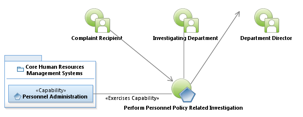
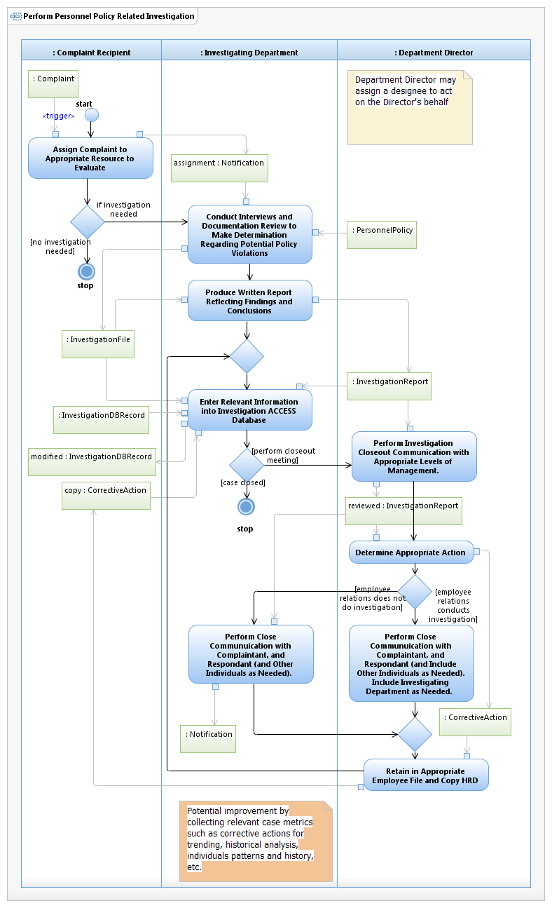

Use Case Model: Perform Personnel Policy Related Investigation
Architect: Aaron Brown, IT Enterprise Architect Senior
Date Last Modified: 2/20/2013
User Review: Jeff Burton
Date: 2/20/2013
When a Personnel policy complaint is indicated, an appropriate representative (designated) of either Department or Corporate Human Resources determines suitability of the issue and assigns an Investigating Department. The designated investigator performs a thorough intake to identify appropriate scope for investigation, develops an investigation plan, and executes the investigation by interviewing the Complainant, Respondent, and Witnesses, and reviews related documentation. After investigation conclusion, a report is written that identifies the allegation and any associated policy violations. Process concludes with a close out meeting with Department Director and appropriate corrective action determination, if any.
Follow link to Role Definitions

Use Case Model: Perform Personnel Policy Related Investigation

Activity Model: Perform Personnel Policy Related Investigation